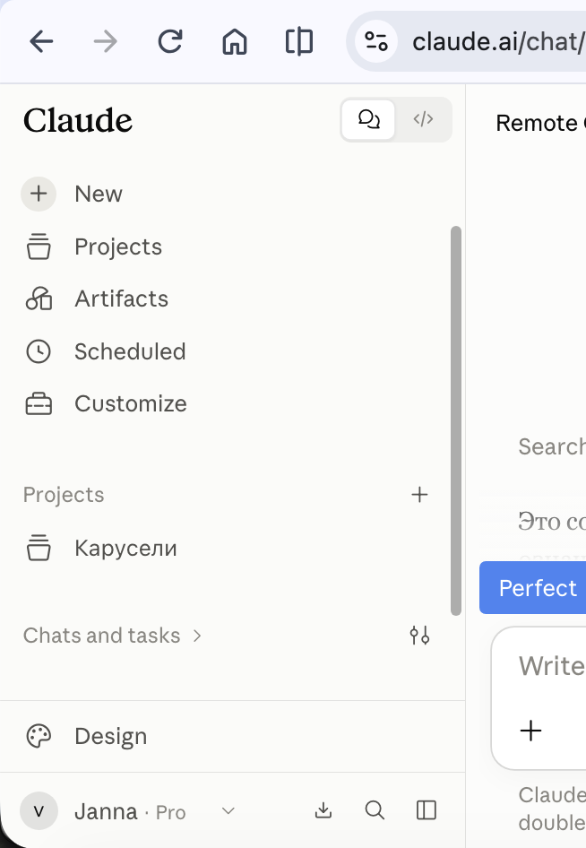
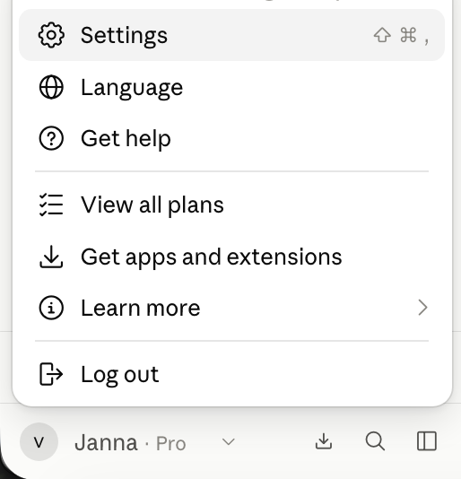
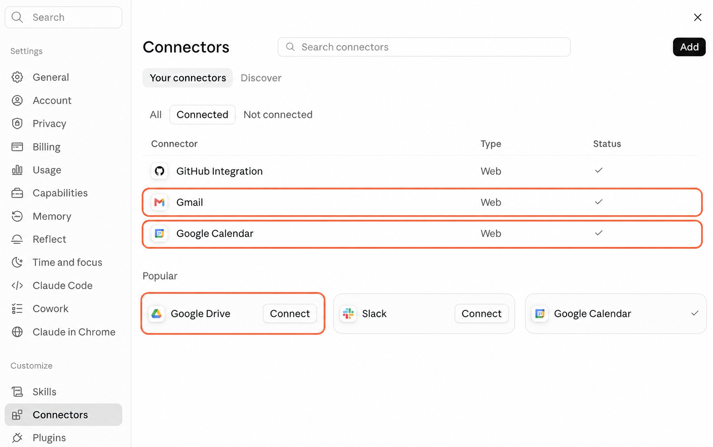
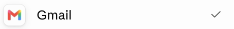
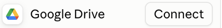
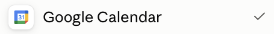

Claude.ai · Connectors
Gmail, Google Drive и Calendar внутри Claude
Письмо в почте, файл с правками на диске, встреча в календаре - всё про одну задачу, но лежит в трёх разных местах. Ты копируешь это в Claude по частям и на каждом переходе что-то не доносишь: то важную строку из переписки, то последнюю версию файла. Claude отвечает на обрывок, а не на задачу целиком. Подключение делается один раз: дальше он сам находит нужное письмо, открывает твой файл и смотрит расписание прямо в разговоре
Если ты ещё не вошёл в Claude, сначала пройди «Claude из России: подключение без блокировок». Там доступ и первый чат, а сюда вернёшься за подключением Gmail, Drive и Calendar
Один разговор вместо трёх вкладок
Зачем подключать Google-сервисы
Подключение меняет не скорость, а то, с чем работает Claude. Раньше он видел куски, которые ты успел перенести руками. Теперь просишь словами: «найди письмо от Марины про смету», «посмотри, что в файле с правками», «я свободен в четверг?» - и он берёт это сам
Claude работает правами твоего Google-аккаунта: видит ровно то, что видишь ты, и ничего сверх этого. Доступ к каждому сервису даёшь отдельно и в любой момент отключаешь
Три действия
Как подключить сервисы
Путь одинаковый для Gmail, Google Drive и Google Calendar. Сначала открой общий раздел коннекторов, затем подключи каждый нужный сервис отдельно
1. Открой Settings
Нажми кружок с инициалами в левом нижнем углу Claude и выбери Settings


Результат: открылась страница настроек Claude
2. Перейди в Connectors
В левом меню прокрути список вниз и нажми Connectors. Здесь собраны уже подключённые и доступные сервисы

Результат: перед тобой список сервисов и их текущий статус
3. Подключи нужный сервис
Найди Gmail, Google Drive или Google Calendar и нажми Connect. Войди в нужный Google-аккаунт, прочитай список запрашиваемых прав и подтверди доступ. Повтори действие для остальных сервисов, которые собираешься использовать



Результат: Claude может использовать выбранный сервис, когда ты прямо просишь об этом в чате
Письма без ручного копирования
Что Claude умеет делать с Gmail
В почте накопилась длинная переписка, а тебе нужно быстро понять, о чём договорились, и подготовить ответ. Вместо ручного копирования писем попроси Claude:
- искать и читать письма по имени отправителя, теме или содержанию
- кратко пересказывать длинные цепочки писем
- готовить черновики ответов с учётом контекста
- отправлять, пересылать и отвечать после твоего подтверждения по умолчанию
- работать с ярлыками, цепочками и списком сохранённых черновиков
Если в письме есть вложение: Claude увидит, что файл прикреплён, но не сможет открыть и прочитать его через Gmail. Если файл тоже нужно проанализировать, добавь его в чат вручную или открой через Google Drive
Документы в актуальной версии
Что Claude умеет делать с Google Drive
Ты помнишь тему документа, но не название и папку. Опиши Claude, что знаешь о файле, и он поможет:
- искать Google Docs и другие доступные тебе файлы
- читать таблицы, презентации, PDF, изображения и файлы Microsoft Office (а создавать такие файлы он умеет отдельно)
- добавлять Google Docs в чат или в проект Claude по ссылке
- создавать папки, перемещать файлы и сохранять результаты Claude на Drive
Если в документе есть не только текст: Claude прочитает основной текст Google Docs, но не увидит встроенные картинки, комментарии и предложенные правки. Если они важны для задачи, добавь нужные изображения или снимки экрана в чат
Расписание без поиска по дням
Что Claude умеет делать с Google Calendar
Нужно найти свободное окно между встречами или перенести событие. Сформулируй задачу обычными словами, чтобы Claude помог:
- показывать события и доступные тебе календари
- искать общее свободное время участников
- создавать, обновлять и удалять события
- управлять участниками, приглашениями и повторяющимися встречами
Перед изменением календаря: попроси Claude сначала показать, что он собирается создать, перенести или удалить. Проверь дату, время, часовой пояс и участников, затем подтверди действие
Можно копировать
Три запроса для первого теста
Подключение есть, но Claude обращается к сервису только по твоей задаче. Начни с безопасного запроса, который сначала показывает результат и ничего не меняет без подтверждения. Копируй примеры запросов и вставляй их в свой чат:
Проверить Gmail
Найди последнее письмо от [имя или компания], кратко перескажи, что от меня ждут, и подготовь ответ. Ничего не отправляй без моего подтверждения
Проверить Google Drive
Найди в Google Drive документ [название или тема], перечисли главные решения и укажи, какие вопросы в нём остались открытыми
Проверить Google Calendar
Покажи мои встречи на завтра, найди свободное окно на один час и ничего не меняй в календаре без моего подтверждения
Права остаются твоими
Что происходит с доступом и данными
Подключение рабочих писем и документов может насторожить, потому что Claude просит доступ к Google-аккаунту. Сначала посмотри, чем этот доступ ограничен, затем проверь настройки на своих экранах:
- Claude видит данные только того Google-аккаунта, который ты подключил
- если ты сам не можешь открыть письмо, файл или календарь, Claude тоже не получит к ним доступ
- Claude обращается к Google-сервису, когда для твоего запроса нужны письмо, файл или событие
- Anthropic сообщает, что письма, файлы и события, полученные через эти подключения, не используются для обучения моделей
Как проверить доступ самому:
- Нажми Connect. На экране входа Google проверь адрес почты и убедись, что выбираешь нужный аккаунт
- До подтверждения Google покажет список данных и действий, к которым Claude просит доступ. Прочитай весь список. Если видишь разрешение, которое не готов дать, вернись назад и не подтверждай подключение
- После подключения открой Settings → Connectors, найди нужный сервис и нажми на него. В карточке можно проверить статус подключения и доступные действия
- Отправь один из безопасных тестовых запросов выше. В ответе Claude проверь ссылки на письма, файлы или события, которые он использовал как источники
- Чтобы ещё раз посмотреть разрешения или полностью закрыть доступ, открой сторонние подключения Google-аккаунта, выбери Claude и нажми See details. Для отключения выбери Remove access
Что проверяется по документам Anthropic: утверждение о том, что данные из Gmail, Drive и Calendar не используются для обучения моделей, нельзя подтвердить переключателем в аккаунте. Это правило сервиса, опубликованное в справке Anthropic
Перед отправкой или изменением: Claude покажет, какое действие собирается выполнить, и попросит подтверждение. Проверь письмо, файл или событие и только после этого подтверждай
Переподключение
Если подключение не работает
Сервис раньше открывался, а теперь Claude просит войти снова или пишет, что доступ заблокирован. Сначала переподключи сервис:
- Открой Settings → Connectors
- Выбери проблемный Google-сервис и нажми Disconnect
- Подтверди отключение и подключи сервис заново
Если это рабочий Google-аккаунт: администратор компании может запрещать подключение сторонних сервисов. Попроси его разрешить Claude в настройках Google Workspace. В панели администратора это называется доверенным приложением. На тарифах Claude Team и Enterprise владелец аккаунта также должен включить коннекторы для всей организации
Проверено 14 сентября 2026
Источники
- Claude Help Center: Use Google Workspace connectors - возможности Gmail, Google Drive и Google Calendar, подтверждения действий, ограничения и переподключение
- Claude Help Center: Use connectors to extend Claude's capabilities - принцип прав доступа и доступность веб-коннекторов
- Google Account Help: Manage connections between your Google Account and third parties - как проверить разрешения Claude и отозвать доступ в Google-аккаунте
Следующий шаг после Connectors
От писем и файлов к рабочему инструменту
Подключённые сервисы убирают ручное копирование. Дальше можно поручать Claude Code и Codex уже не поиск отдельных данных, а сборку рабочего инструмента под твою задачу. На бесплатном обучении тебе покажут этот путь на экране. Ты повторишь его простыми командами по-русски, без программирования
Посмотреть, что собрать дальше